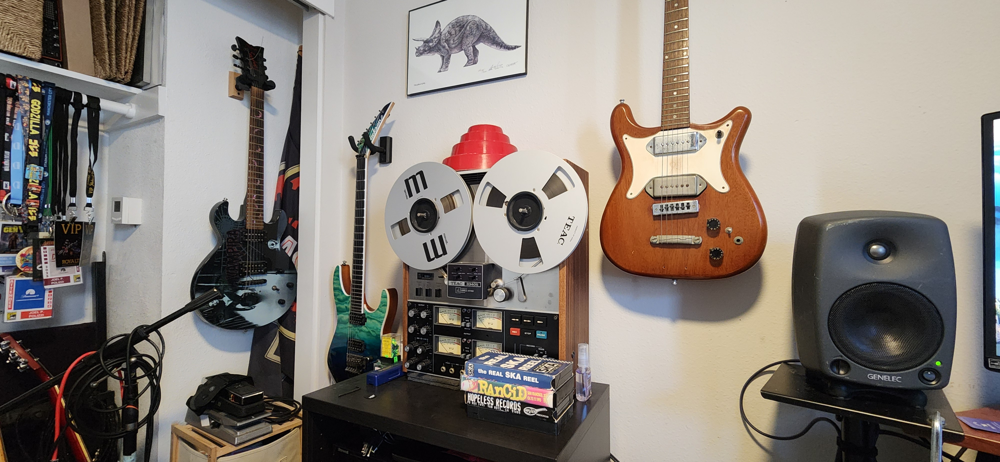

DevOps, MLOps, and Fullstack Automation Engineer with a passion for working in backend on-prem deployments. Trainied as an Audio Engineer, I shifted towards visualization application and applied my under graduate degree working at CalIT2, a multidisciplinary research center at UC San Diego. There I was exposed to working in high end visualization under Tom Defanti, and Larry Smarr. I spent several years building and developing the SunCAVE, a 70 screen, 35 node visualization system designed to be a walk-in virtual reality room. I furthered my visualization experience by working on Dr. Smarr's Future Patient, a Big Data Visualization project that spanned the VRoom wall system to enable doctors to interact and contextualize Larry Smarr's medical bio markers, Covid-19 tracking in OpenANTz, and HPWREN sensor ingestion into Unreal Engine (UE4). The core of the visualization system I built was to integrate the system into the Nautilus cluster, This exposed me to on-prem hyperconverged infrastructure, and Kubernetes environments. I built the viusualization system to display parallel graphics from K8s (Kuberrnetes) pods, a novel deployment strategy that allowed the system to be leveraged as both a Machine Learning cluster, and a high end visualization system. This experience introduced me to many components that later became integral to the development of AI software, and ultimatly led me down the operations path and a furthered interest in ML/DL workflows.
